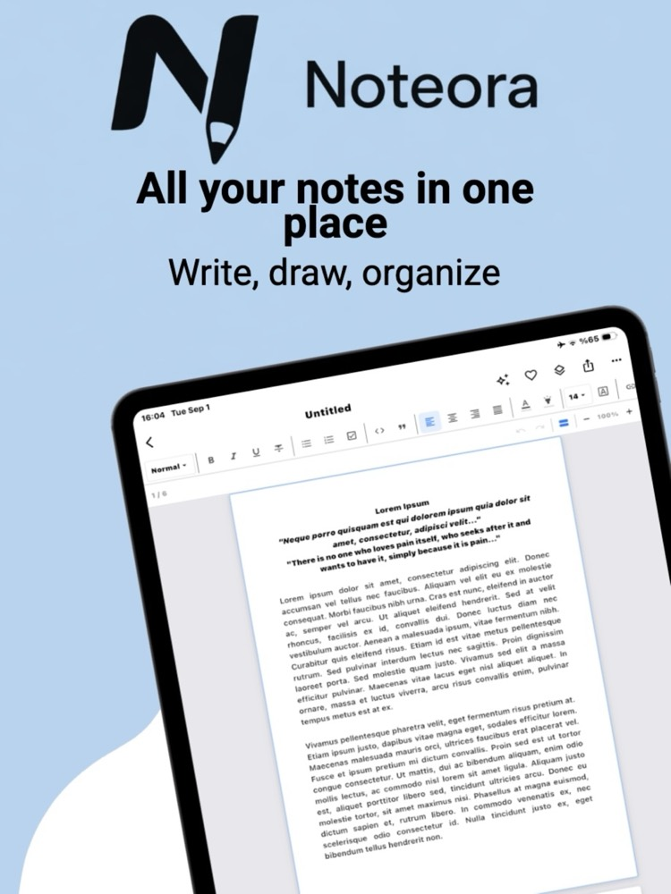
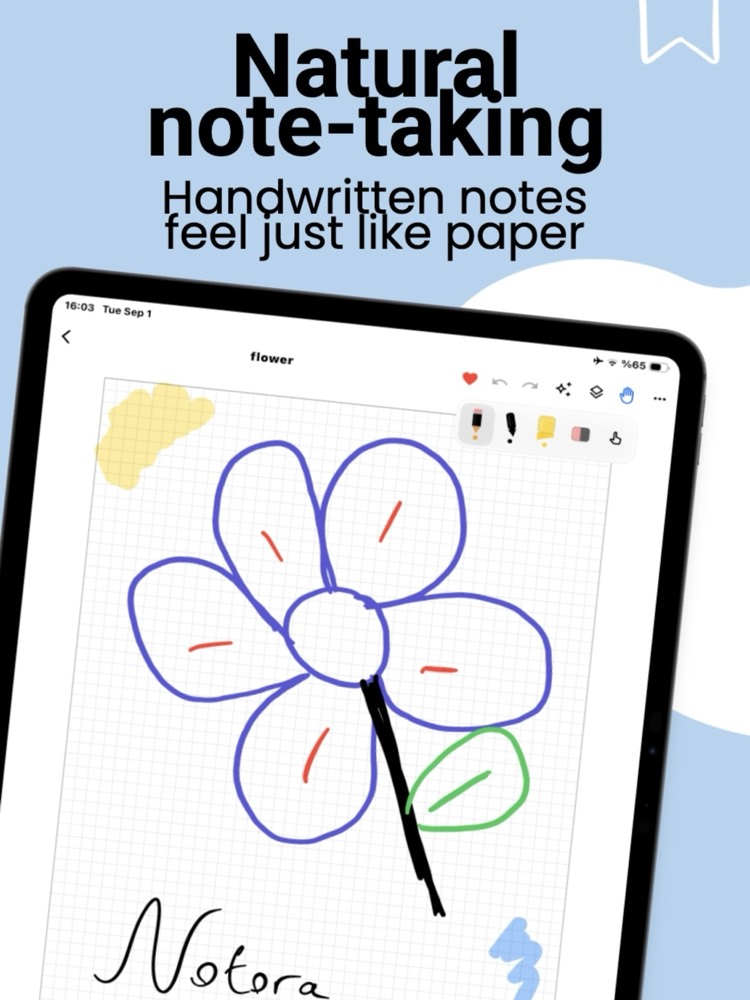
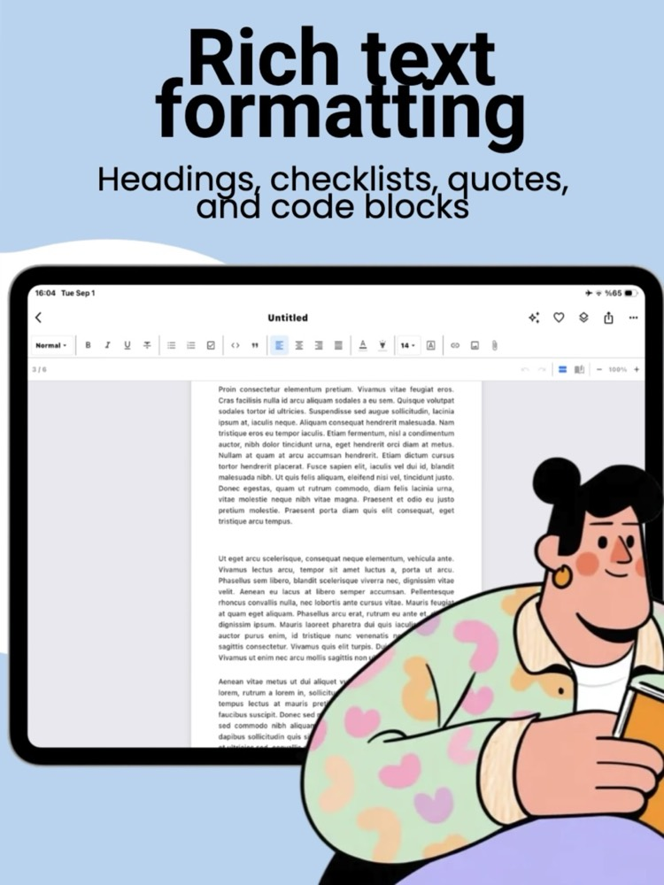
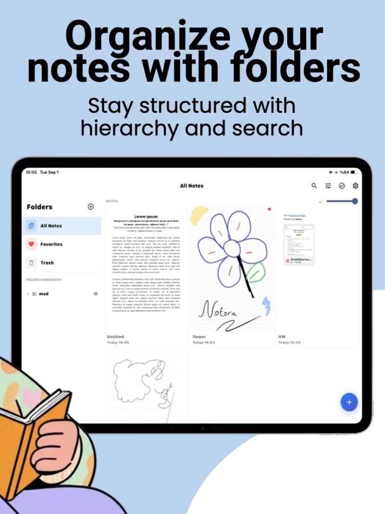
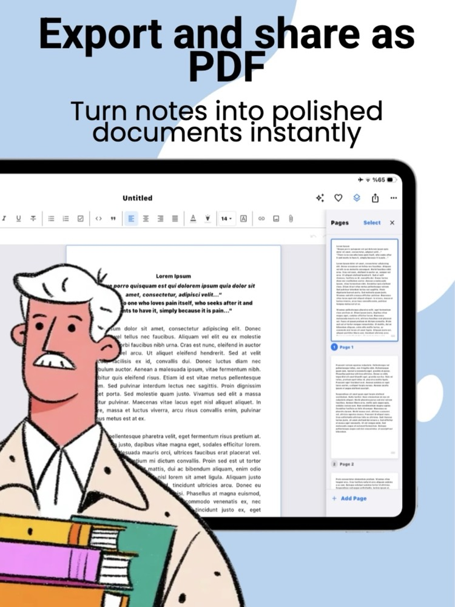

One app for everything you write.
Type it or handwrite it — Noteora keeps rich formatting, folders, and privacy in one calm, offline note-taking app that always looks exactly like the real page.
See Noteora in action
Real screens from the app — the editor, the pen, your folders, and the export panel.

One library for everything you write
Typed documents and handwritten pages live side by side in the same place. Open the app and start writing — there is no sign-up, no setup screen, and nothing to sync.

Handwriting that behaves like paper
Pressure-sensitive strokes, a highlighter, and an eraser that do exactly what you expect. Choose lined, grid, dotted, Cornell, or plain paper underneath, in portrait or landscape.

A real editor, not a text box
Headings, checklists, quotes, code blocks, alignment, links, images, and nine fonts — all laid out on a true A4 page, so what you write is already shaped like the document you'll send.

Structure that grows with you
Nested folders, favorites, and a trash you can recover from, plus full-text search and a density slider so a hundred notes stay as easy to scan as five.

Finished documents in one tap
Reorder, add, or select pages in the side panel, then export the whole note or just the pages you picked. The PDF matches the screen exactly — margins, spacing, and ink included.
Everything a notebook should do — and more
Two ways to write, organized your way, and always ready to export.
Rich text editing
Write like it's a real document, not a plain text box.
- Bold, italic, underline, and strikethrough
- Headings, bullet, numbered, and checklists
- Quotes, code blocks, links, and 9 fonts
Handwriting & sketching
A natural pen that feels right, on paper that fits your task.
- Smooth, pressure-sensitive pen strokes
- 7 templates: lined, grid, dotted, Cornell & more
- Portrait or landscape pages
Documents, not just pages
Long notes flow automatically, just like a word processor.
- Automatic multi-page pagination
- Continuous scroll or two-page book view
- Pinch to zoom, drag & resize images
Organize your way
Structure grows with you, from a handful of notes to hundreds.
- Nested folders, pinned to the top
- Tags, favorites, and fast full-text search
- Reminders and deadlines on any note
Privacy & security
Your notes are yours. Nothing here asks for your data.
- PIN-lock individual notes or whole folders
- Optional hint if you forget your PIN
- Local storage only — no cloud, no sync
Export & share
What you see is exactly what you get, on paper or on screen.
- Pixel-perfect PDF export, typed or handwritten
- Plain text export for quick sharing
- Export the whole note or just selected pages
What you see is what gets exported.
Noteora lays out every note on a fixed A4 page, so margins, line breaks, and list formatting stay identical from screen to PDF — in portrait or landscape, on any device.
- Font size and layout never shift between devices
- Headings, lists, and quotes carry over exactly as styled
- Handwritten pages export with the same precision
Type when you're fast. Handwrite when you're thinking.
Switch freely between structured typed notes and free-form handwriting — in the same folder, side by side, whichever fits the moment.
- Rich text notes with full formatting control
- Pressure-sensitive handwriting with 7 page styles
- Light, dark, or system-matched theme for either
Your notes stay yours.
We have no server. You don't open an account, and we never ask for your email. Your notes don't leave your phone — because there is nowhere for them to go.
There is no server to send anything to
Noteora has no backend. We don't run a database of your notes, because we don't run anything at all. There's no sign-up screen, no login, and no email field anywhere in the app — nothing to create, nothing to leak, nothing for us to hand over.
The app has no way to go online
Noteora is built without any networking code. No HTTP client ships in the app on either platform, and none of the components it uses brings one in. There is no code path that could upload a note, sync it, or phone home. The only thing that ever opens is your own browser — when you tap the privacy or terms link yourself.
Zero tracking SDKs, of any kind
No analytics, no crash reporting, no advertising, no A/B testing. No Firebase, Crashlytics, Sentry, Amplitude, Mixpanel, or Facebook SDK — none of them are in the build. Nothing measures what you write, or how and when you use the app.
Only the permissions a notebook needs
Photo library access, so you can place an image into a note. That's the whole list on both platforms. No camera, no location, no contacts, no calendar, no microphone — and no ad-tracking prompt, because Noteora never asks to track you and never touches your advertising ID.
Your notes stay on the device — and out of backups
Notes live in a local database on your device, and they're deliberately kept out of automatic backups on both platforms — nothing is copied into iCloud or into a Google backup. On iOS the files also carry the system's file protection, so even a copy pulled off a locked device can't be read. Data leaves only when you tap share or export — and you decide where it goes.
A locked note is genuinely encrypted
Put a PIN on a note and its contents are encrypted on your device with AES-256-GCM. The key is derived from your PIN using PBKDF2-HMAC-SHA256 over 100,000 iterations, and it is never stored anywhere. Eight parts of the note are covered — pages, text, page titles, image and file references, search text, and the description — so a locked note doesn't leak through its own preview or search index.
The cryptography isn't ours — it's the system's
All encryption runs through the operating system's own libraries: CryptoKit and CommonCrypto on iOS, the Java Cryptography Extension on Android. Noteora doesn't ship a homemade algorithm. And the moment the app goes to the background, any open locks close and the keys are wiped from memory.
Nothing left lying around
Temporary files created while sharing or exporting are swept automatically, and image and attachment files belonging to deleted notes are cleaned up rather than left behind on disk.
Being straight with you
The honest limits, stated plainly rather than buried:
- Only the notes you lock are encrypted. Everything else is stored in plain form on your device, the way most notes apps work. Lock whichever notes need it — that's what the feature is for.
- If you forget a PIN, that note is gone. The key exists only while you're typing it in. There's no recovery link and no backdoor — we can't open it either. You can set an optional hint when you create the lock.
- We don't collect anything — the app stores do. Apple and Google gather their own download counts and crash diagnostics at the store level. That's governed by their policies, not ours, and we see only the aggregate numbers they choose to show us.
Your notebook, reinvented.
Free to download. No account required. Available on the App Store.